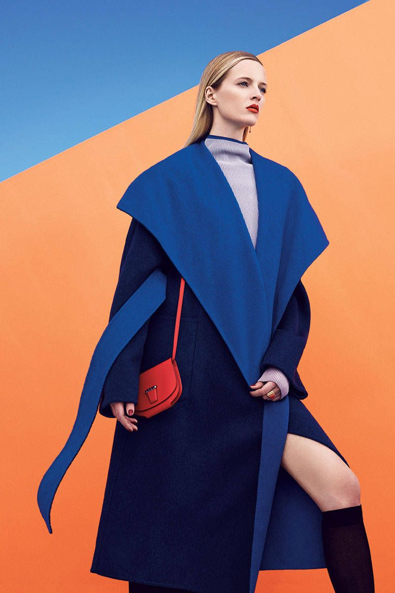

NGHỀ KOLs VÀ NHỮNG GÓC KHUẤT CHƯA AI BIẾT
KOLs là một công việc chẳng còn quá xa lạ trong xã hội hiện tại. Nhiều nguồn tin cho rằng, có thể dễ dàng kiếm được hàng trăm triệu một tháng bằng công việc này.
Vì lẽ đó mà ngày nay nhà nhà, người người đều đổ xô đi làm KOLs. Liệu đây có thực sự là một công việc đáng mơ ước, đáng để đầu tư và theo đuổi?
Nghề KOLs là làm gì?
KOLs có thể hiểu ngắn gọn là những người có tầm ảnh hưởng trên mạng xã hội và nổi tiếng bởi một lĩnh vực chuyên môn cụ thể nào đó.
Có 3 nhóm KOLs chính:
- Celebrities: Là nhóm người nổi tiếng trong lĩnh vực giải trí, nghệ thuật. Đây là nhóm có độ nhận diện cao nhất và được truyền thông quan tâm
nhiều nhất trên mạng xã hội.
- Influencers: Nhóm người có tầm ảnh hưởng lớn, hoạt động chủ yếu trên mạng xã hội. Họ có thể là bất cứ ai, làm bất kỳ ngành nghề nào và
không nhất thiết phải là chuyên gia trong một lĩnh vực nào đó. Tuy có thể không nổi tiếng bằng nhóm celebs, nhưng nếu nội dung của họ thật sự chất lượng thì
biên độ phủ sóng của influencers có thể trải dài đến phạm vi toàn cầu.
- Mass seeders: Có sức ảnh hưởng ít hơn 2 nhóm trên, tuy nhiên nhóm người này cũng sở hữu một lượng đối tượng theo dõi riêng biệt,
có tính tương tác cao và sức ảnh hưởng nhất định đối với các thương hiệu nhỏ lẻ. Mass seeders thường chia sẻ lại và review nội dung của các KOLs và Influencers.
Phạm vi công việc của một KOLs là không giới hạn và đa dạng trong nhiều lĩnh vực, vai trò như: đại sứ thương hiệu, gương mặt đại diện, đóng quảng cáo, chụp ảnh,
viết bài chia sẻ, PR sản phẩm,… Với sức ảnh hưởng cũng như chuyên môn tốt của mình, KOLs giúp cho các thương hiệu thay đổi được phương thức tiếp cận và truyền tải
được thông điệp mà nhãn hàng muốn gửi gắm đến cộng đồng người tiêu dùng.
Hào nhoáng của nghề làm KOLs
1. Ăn mặc đẹp, lộng lẫy
Vì tính chất công việc, các KOLs thường xuyên phải xuất hiện chỉn chu trước truyền thông. Dù là bất cứ nơi đâu, KOLs luôn phải chuẩn bị cho mình một diện mạo xinh đẹp,
thu hút.
Khi làm một KOLs, bạn sẽ được diện những chiếc váy, bộ quần áo sang trọng từ phía nhãn hàng hợp tác để quảng bá cho thương hiệu. Hình ảnh của bạn cũng vì thế mà luôn
lộng lẫy trong mắt công chúng. Tên tuổi của bạn sẽ ngày càng viral hơn nhờ vào độ xinh đẹp và thời trang của mình.

2. Thu nhập khủng
Tùy vào mức độ ảnh hưởng và nổi tiếng của mình mà thu nhập của một KOLs có thể linh động và khác biệt trong nhiều phân khúc.
Theo một số nguồn tin, những KOLs có lượng người theo dõi cao, sức lan tỏa lớn thì chỉ với một vài giờ đi dự sự kiện cũng có thể kiếm được khoảng 3000 USD.
Đó là chưa tính đến các khoản thu nhập khác từ công việc chụp hình, đóng quảng cáo, viết bài PR,… Con số thu nhập hàng tháng lên đến hàng trăm triệu cũng là
chuyện không quá bất ngờ.
3. Thời gian tự do
Không cần phải làm việc một ngày 8 tiếng như nhân viên văn phòng, các KOLs có thể chủ động sắp xếp thời gian và kiểm soát công việc của mình. Nếu là một KOLs tự do,
họ có thể linh động làm việc với bất cứ nơi đâu và bất cứ dự án nào mình cảm thấy phù hợp mà không bị ràng buộc hay quản lý bởi công ty chủ thể nào.
Góc khuất của nghề KOLs
1. Áp lực lớn từ mạng xã hội
Mạng xã hội là một con dao hai lưỡi trong công việc KOLs. Đây là nơi có thể giúp họ kiếm ra được rất nhiều tiền, cũng có thể là nơi vùi chôn toàn bộ danh tiếng của họ.
Khi trở thành người của công chúng, dù ở cấp độ nào thì việc giữ hình ảnh và cẩn trọng trong các phát ngôn, hành xử là điều vô cùng quan trọng.
Chỉ cần một hành động thiếu tinh tế hay cư xử không đúng mực, KOLs có thể bị dư luận đàn áp và quay lưng, mất hết mọi danh tiếng đã gây dựng.
Một ví dụ về trường hợp của Nờ Ô Nô thời gian vừa qua, chắc hẳn sẽ là một bài học đắt giá và sâu sắc cho toàn bộ cộng đồng KOLs tại Việt Nam.
2. Nhiều cám dỗ
Bất kỳ sự nổi tiếng nào cũng đi kèm theo nhiều sự cám dỗ. Vì là người nổi tiếng nên các KOLs thường có nhiều người tìm đến để gửi những lời mời “khiếm nhã” vào
các đường dây đen tối, phi pháp, hoặc là những hợp đồng PR cho các sản phẩm kém chất lượng, ảnh hưởng xấu đến sức khỏe người tiêu dùng.
Đứng trước vô vàn sự mời gọi, người KOLs nếu không tỉnh táo chọn lựa đúng đắn thì sẽ bị ma lực của đồng tiền cám dỗ, đưa bản thân vào con đường tội lỗi,
xa rời các tiêu chuẩn đạo đức của xã hội.
3. Thị trường đào thải khắc nghiệt
Vì là một công việc đòi hỏi tính chất sáng tạo cao, nên KOLs phải luôn mang áp lực làm mới bản thân trong cả hình ảnh và chất lượng nội dung. Việc cập nhật trend
và nâng cấp bản thân sao cho phù hợp với nhu cầu của người xem mà không mất đi bản chất và thương hiệu cá nhân, luôn là bài toán khó cho toàn bộ nhóm người đang làm
công việc sáng tạo nói chung và các KOLs nói riêng.
“Tre già măng mọc” luôn là quy luật tất yếu của công việc. Tính chất của nghề KOLs luôn cần những nhân tố mới lạ, thu hút.
Lớp trẻ ngày nay có cơ hội được tiếp xúc với mạng xã hội nhiều hơn thế hệ trước, vì thế mà tư duy và độ sáng tạo của họ cũng độc đáo và mới mẻ hơn. Cảm quan nghệ thuật đó
vô tình lại rất phù hợp với dòng chảy hiện tại của thời đại.
Lời kết
Công việc nào cũng đều sẽ có những góc tối và áp lực riêng. Để đạt được thành công trong nghề nghiệp mình đã chọn, mỗi cá nhân đều phải luôn cố gắng,
nỗ lực không ngừng nghỉ để trau dồi bản thân.
Nghề làm KOLs là một công việc tốt, thu nhập rất cao, có thể giúp đổi đời một con người nhưng cũng có thể vùi dập họ xuống đáy tận cùng của xã hội.
Nếu bạn đang có ước muốn trở thành một KOLs, hãy tìm hiểu và cân nhắc mọi vấn đề, khía cạnh của công việc này thật kỹ lưỡng. Chỉ cần bạn có đủ đam mê và đặt toàn bộ tâm huyết,
đạo đức làm nghề của mình vào nó, bạn sẽ đạt được thành công và vị trí xứng đáng cho những nỗ lực mà mình đã bỏ ra.